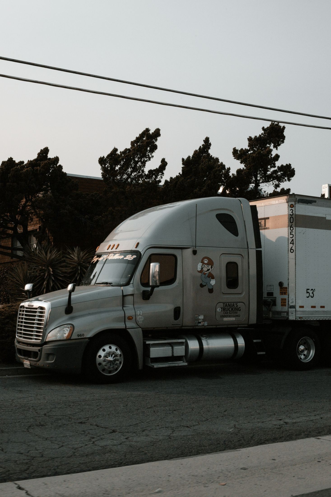
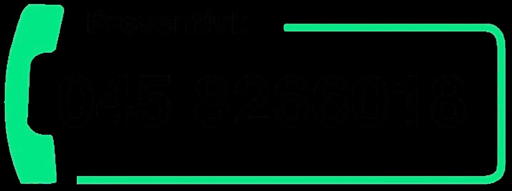
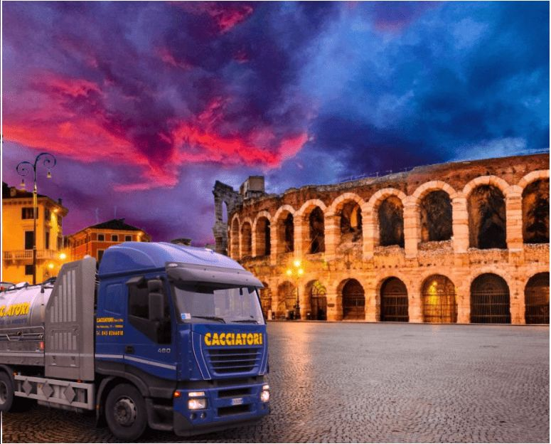
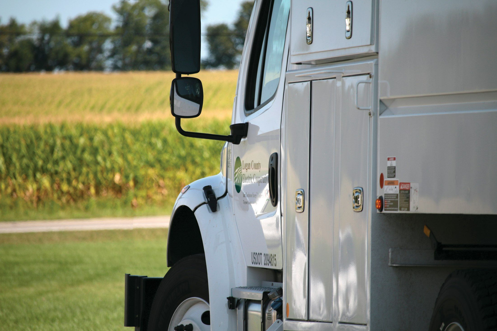

San Giovanni Lupatoto Verona
Quando si intasa,arriviamo noi.
Operiamo 24 ore su 24, 7 giorni su 7
Richiedi un preventivo
L'azienda
Pozzi Neri Cacciatori lavora da San Giovanni Lupatoto: spurgo pozzi neri, disostruzione condotte e videoispezioni, per verona e provincia.

Servizi
Tutto il servizio, un interlocutore.
Per comuni, aziende e privati di Verona.
Spurgo pozzi neri
Svuotamento e pulizia di fosse biologiche, Imhoff e degrassatori.

Disostruzione condotte
Disostruzione di scarichi e tubazioni con attrezzature ad alta pressione.
Videoispezioni
Ispezione delle condotte con telecamera: si vede il problema prima di scavare.

Risanamento tubazioni relining
Ricerca guasti e interventi su tubazioni e scarichi, anche interrati.

Bonifica cisterne gasolio
Ritiro di oli usati e lubrificanti esausti, con avvio a rigenerazione.

Ricerca perdite
Ricerca guasti e interventi su tubazioni e scarichi, anche interrati.
Pronto intervento H24
Spurgo e pulizia di fosse, pozzetti e condotte, con mezzi attrezzati e smaltimento autorizzato di quanto aspirato.
Come lavoriamo
Ogni passaggio, tracciato.
Fase 01
Chiamata
Ci dite dove e cosa: fossa, pozzetto, condotta, urgenza.
Fase 02
Sopralluogo
Valutiamo accesso, volumi e mezzo adatto.
Fase 03
Intervento
Aspirazione, lavaggio e, se serve, video-ispezione.
Fase 04
Trasporto
Il refluo va a un impianto autorizzato, con formulario.
Fase 05
Documenti
Vi restano i documenti di trasporto e smaltimento.
Lavora con noi
Autisti, operatori, tecnici: cerchiamo persone che conoscono il territorio.
Mandateci il vostro curriculum: lo leggiamo tutto, e vi richiamiamo.
Contatti
Un preventivo, senza giri.
Enti, aziende e privati: indicateci il servizio e la zona, vi rispondiamo con tempi e preventivo.